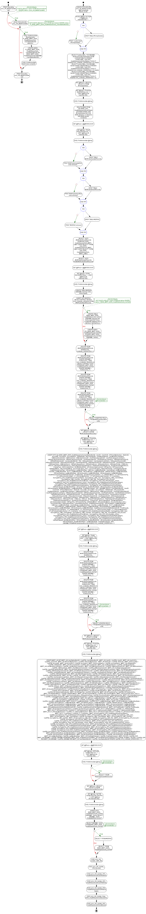

<a href="proc_HA_MasterUpdate.png"></a>
GO PRINT 'Executing proc_HA_MasterUpdate.sql'; GO IF EXISTS (SELECT name FROM sys.procedures WHERE name = 'proc_HA_MasterUpdate') BEGIN DROP PROCEDURE proc_HA_MasterUpdate; END; GO -- exec proc_HA_MasterUpdate CREATE PROCEDURE proc_HA_MasterUpdate (@PreviewData AS bit = 0) AS BEGIN /************************************************************************************************************************************************************************************************************************ Test DB: use KenticoCMS_Datamart_2 Author: W. Dale Miller Date: 03.23.2016 Contact: wdalemiller@gmail.com View: select top 100 * from KenticoCMS_1.dbo.HFit_HealthAssesmentUserStarted Test Exec: update KenticoCMS_1.dbo.HFit_HealthAssesmentUserStarted set HAScore = HAScore + 1 where ItemID in (Select distinct top 100 ItemID from KenticoCMS_1.dbo.HFit_HealthAssesmentUserStarted order by ItemID desc) update KenticoCMS_2.dbo.HFit_HealthAssesmentUserStarted set HAScore = HAScore + 1 where ItemID in (Select distinct top 10 ItemID from KenticoCMS_2.dbo.HFit_HealthAssesmentUserStarted order by ItemID desc) update KenticoCMS_3.dbo.HFit_HealthAssesmentUserStarted set HAScore = HAScore + 1 where ItemID in (Select distinct top 10 ItemID from KenticoCMS_3.dbo.HFit_HealthAssesmentUserStarted order by ItemID desc) delete from KenticoCMS_3.dbo.HFit_HealthAssesmentUserStarted where ItemID in (select top 2 ItemID from KenticoCMS_3.dbo.HFit_HealthAssesmentUserStarted K join BASE_MART_EDW_HealthAssesment B on K.ItemID = B.UserStartedItemId and DBNAME = 'KenticoCMS_3') SYNC: proc_HA_Update_CMS_Site proc_HA_Update_HFit_Account proc_HA_Update_HFit_HealthAssesmentUserAnswers proc_HA_Update_HFit_HealthAssesmentUserRiskArea proc_HA_Update_HFit_HealthAssesmentUserRiskCategory proc_HA_Update_View_EDW_HealthAssesmentQuestions Use: exec proc_HA_MasterUpdate CT Data: SELECT ItemID FROM CHANGETABLE(CHANGES KenticoCMS_3.dbo.HFit_HealthAssesmentUserStarted, 0) AS CT where SYS_CHANGE_OPERATION = 'D' NOTES: For deletes, delete from the BASE_HFit_HealthAssesmentUserStarted table and a trigger, TRIG_DEL_BASE_HFit_HealthAssesmentUserStarted_HA_Sync, will take care of the BASE_MART_EDW_HealthAssesment table. ************************************************************************************************************************************************************************************************************************/ declare @iRecs as bigint = 0,@Msg as nvarchar(max) = '' ; BEGIN TRY DROP TABLE #TempDeletes; END TRY BEGIN CATCH PRINT 'created table #TempDeletes'; END CATCH; --****************************************************************************************************************************************** -- TAKE OF ANY DELETES in HFit_HealthAssesmentUserStarted FIRST SELECT 'KenticoCMS_1' AS DBNAME , ItemID INTO #TempDeletes FROM CHANGETABLE (CHANGES KenticoCMS_1.dbo.HFit_HealthAssesmentUserStarted , 0) AS CT WHERE SYS_CHANGE_OPERATION = 'D' UNION SELECT 'KenticoCMS_2' AS DBNAME , ItemID FROM CHANGETABLE (CHANGES KenticoCMS_2.dbo.HFit_HealthAssesmentUserStarted , 0) AS CT WHERE SYS_CHANGE_OPERATION = 'D' UNION SELECT 'KenticoCMS_3' AS DBNAME , ItemID FROM CHANGETABLE (CHANGES KenticoCMS_3.dbo.HFit_HealthAssesmentUserStarted , 0) AS CT WHERE SYS_CHANGE_OPERATION = 'D'; SET @iRecs = (SELECT COUNT (*) FROM #TempDeletes) ; SET @msg = 'Projected DELETES this run: ' + CAST (@iRecs AS nvarchar (50)) ; EXEC PrintImmediate @msg; DELETE BASE FROM dbo.BASE_HFit_HealthAssesmentUserStarted AS BASE INNER JOIN #TempDeletes AS D ON BASE.dbname = D.dbname AND BASE.ItemID = D.Itemid; SET @iRecs = @@ROWCOUNT; SET @msg = 'Actual DELETES this run: ' + CAST (@iRecs AS nvarchar (50)) ; EXEC PrintImmediate @msg; --****************************************************************************************************************************************** -- DECLARE @PreviewData AS bit = 1; BEGIN TRY DROP TABLE #HAPulledUpdateRecords; END TRY BEGIN CATCH PRINT '#HAPulledUpdateRecords removed'; END CATCH; BEGIN TRY DROP TABLE #HAPulledInsertRecords; END TRY BEGIN CATCH PRINT '#HAPulledInsertRecords removed'; END CATCH; BEGIN TRY DROP TABLE #VERNO; END TRY BEGIN CATCH PRINT '#VERNO removed'; END CATCH; SELECT * INTO #HAPulledInsertRecords FROM view_EDW_HealthAssessment_MART_CMS1 UNION SELECT * FROM view_EDW_HealthAssessment_MART_CMS2 UNION SELECT * FROM view_EDW_HealthAssessment_MART_CMS3; SELECT * INTO #HAPulledUpdateRecords FROM #HAPulledInsertRecords; SET @iRecs = @@ROWCOUNT; SET @msg = 'TOTAL RECORDS Pulled: ' + CAST (@iRecs AS nvarchar (50)) ; EXEC PrintImmediate @msg; -- use KenticoCMS_Datamart_2 CREATE TABLE #VERNO (DBNAME nvarchar (250) , VerNo bigint) ; INSERT INTO #VERNO SELECT DISTINCT dbname , SYS_CHANGE_VERSION FROM #HAPulledInsertRecords; IF NOT EXISTS (SELECT name FROM sys.tables WHERE name = 'BASE_MART_EDW_HealthAssesment_VerHist') BEGIN CREATE TABLE BASE_MART_EDW_HealthAssesment_VerHist (DBNAME nvarchar (50) , VerNo bigint NOT NULL , CreateDate datetime NULL DEFAULT GETDATE ()) ; CREATE INDEX IDX_BASE_MART_EDW_HealthAssesment_VerHist ON BASE_MART_EDW_HealthAssesment_VerHist (DBNAME , VerNo) ; END; --************************************************************************************** -- REMOVE all previously processed INSERT change records. DELETE FROM #HAPulledInsertRecords WHERE SYS_CHANGE_OPERATION != 'I'; DELETE FROM #HAPulledInsertRecords WHERE DBNAME = 'KenticoCms_1' AND SYS_CHANGE_VERSION IN (SELECT DISTINCT VerNo FROM BASE_MART_EDW_HealthAssesment_VerHist WHERE DBNAME = 'KenticoCms_1') ; DELETE FROM #HAPulledInsertRecords WHERE DBNAME = 'KenticoCms_2' AND SYS_CHANGE_VERSION IN (SELECT DISTINCT VerNo FROM BASE_MART_EDW_HealthAssesment_VerHist WHERE DBNAME = 'KenticoCms_2') ; DELETE FROM #HAPulledInsertRecords WHERE DBNAME = 'KenticoCms_3' AND SYS_CHANGE_VERSION IN (SELECT DISTINCT VerNo FROM BASE_MART_EDW_HealthAssesment_VerHist WHERE DBNAME = 'KenticoCms_3') ; IF @PreviewData = 1 BEGIN SELECT 'INSERTED RECS' , * FROM #HAPulledInsertRecords; END; --************************************************************************************** --PROCESS THE INSERTED RECORDS SET @iRecs = (SELECT COUNT (*) FROM #HAPulledInsertRecords) ; SET @msg = 'Projected INSERTS this run: ' + CAST (@iRecs AS nvarchar (50)) ; EXEC PrintImmediate @msg; INSERT INTO dbo.BASE_MART_EDW_HealthAssesment (UserStartedItemID , UserID , UserGUID , HFitUserMpiNumber , SiteGUID , AccountID , AccountCD , AccountName , HAStartedDt , HACompletedDt , UserModuleItemId , UserModuleCodeName , HAModuleNodeGUID , CMSNodeGuid , HAModuleVersionID , UserRiskCategoryItemID , UserRiskCategoryCodeName , HARiskCategoryNodeGUID , HARiskCategoryVersionID , UserRiskAreaItemID , UserRiskAreaCodeName , HARiskAreaNodeGUID , HARiskAreaVersionID , UserQuestionItemID , Title , HAQuestionGuid , UserQuestionCodeName , HAQuestionDocumentID , HAQuestionVersionID , HAQuestionNodeGUID , UserAnswerItemID , HAAnswerNodeGUID , HAAnswerVersionID , UserAnswerCodeName , HAAnswerValue , HAModuleScore , HARiskCategoryScore , HARiskAreaScore , HAQuestionScore , HAAnswerPoints , UOMCode , HAScore , ModulePreWeightedScore , RiskCategoryPreWeightedScore , RiskAreaPreWeightedScore , QuestionPreWeightedScore , ChangeType , ItemCreatedWhen , ItemModifiedWhen , IsProfessionallyCollected , HAPaperFlg , HATelephonicFlg , HAStartedMode , HACompletedMode , DocumentCulture_VHCJ , DocumentCulture_HAQuestionsView , CampaignNodeGUID , HealthAssessmentType , HAUserStarted_LastModifiedDate , CMSUser_LastModifiedDate , UserSettings_LastModifiedDate , UserSite_LastModifiedDate , ACCT_LastModifiedDate , HAUserModule_LastModifiedDate , HARiskCategory_LastModifiedDate , HAUserRiskArea_LastModifiedDate , HAUserQuestion_LastModifiedDate , HAUserAnswers_LastModifiedDate , HealthAssesmentUserStartedNodeGUID , PointResults , QuestionGroupCodeName , CT_HAStartedMode , CT_HATelephonicFlg , CT_HADocumentConfigID , CT_HFitUserMpiNumber , CT_IsProfessionallyCollected , CT_CodeName , SurrogateKey_HFit_HealthAssesmentUserStarted , SurrogateKey_CMS_User , SurrogateKey_CMS_UserSettings , SurrogateKey_CMS_UserSite , SurrogateKey_CMS_Site , SurrogateKey_HFit_Account , SurrogateKey_HFit_HealthAssesmentUserModule , SurrogateKey_View_HFit_HACampaign_Joined , SurrogateKey_View_HFit_HealthAssessment_Joined , SurrogateKey_HFit_HealthAssesmentUserRiskCategory , SurrogateKey_HFit_HealthAssesmentUserRiskArea , SurrogateKey_HFit_HealthAssesmentUserQuestion , SurrogateKey_View_EDW_HealthAssesmentQuestions , SurrogateKey_HFit_HealthAssesmentUserAnswers , HARiskCategory_ItemModifiedWhen , HAUserRiskArea_ItemModifiedWhen , HAUserQuestion_ItemModifiedWhen , HAUserAnswers_ItemModifiedWhen , LastModifiedDate , RowDataChanged , SVR , DBNAME) SELECT UserStartedItemID , UserID , UserGUID , HFitUserMpiNumber , SiteGUID , AccountID , AccountCD , AccountName , HAStartedDt , HACompletedDt , UserModuleItemId , UserModuleCodeName , HAModuleNodeGUID , CMSNodeGuid , HAModuleVersionID , UserRiskCategoryItemID , UserRiskCategoryCodeName , HARiskCategoryNodeGUID , HARiskCategoryVersionID , UserRiskAreaItemID , UserRiskAreaCodeName , HARiskAreaNodeGUID , HARiskAreaVersionID , UserQuestionItemID , Title , HAQuestionGuid , UserQuestionCodeName , HAQuestionDocumentID , HAQuestionVersionID , HAQuestionNodeGUID , UserAnswerItemID , HAAnswerNodeGUID , HAAnswerVersionID , UserAnswerCodeName , HAAnswerValue , HAModuleScore , HARiskCategoryScore , HARiskAreaScore , HAQuestionScore , HAAnswerPoints , UOMCode , HAScore , ModulePreWeightedScore , RiskCategoryPreWeightedScore , RiskAreaPreWeightedScore , QuestionPreWeightedScore , ChangeType , ItemCreatedWhen , ItemModifiedWhen , IsProfessionallyCollected , HAPaperFlg , HATelephonicFlg , HAStartedMode , HACompletedMode , DocumentCulture_VHCJ , DocumentCulture_HAQuestionsView , CampaignNodeGUID , HealthAssessmentType , HAUserStarted_LastModifiedDate , CMSUser_LastModifiedDate , UserSettings_LastModifiedDate , UserSite_LastModifiedDate , ACCT_LastModifiedDate , HAUserModule_LastModifiedDate , HARiskCategory_LastModifiedDate , HAUserRiskArea_LastModifiedDate , HAUserQuestion_LastModifiedDate , HAUserAnswers_LastModifiedDate , HealthAssesmentUserStartedNodeGUID , PointResults , QuestionGroupCodeName , CT_HAStartedMode , CT_HATelephonicFlg , CT_HADocumentConfigID , CT_HFitUserMpiNumber , CT_IsProfessionallyCollected , CT_CodeName , SurrogateKey_HFit_HealthAssesmentUserStarted , SurrogateKey_CMS_User , SurrogateKey_CMS_UserSettings , SurrogateKey_CMS_UserSite , SurrogateKey_CMS_Site , SurrogateKey_HFit_Account , SurrogateKey_HFit_HealthAssesmentUserModule , SurrogateKey_View_HFit_HACampaign_Joined , SurrogateKey_View_HFit_HealthAssessment_Joined , SurrogateKey_HFit_HealthAssesmentUserRiskCategory , SurrogateKey_HFit_HealthAssesmentUserRiskArea , SurrogateKey_HFit_HealthAssesmentUserQuestion , SurrogateKey_View_EDW_HealthAssesmentQuestions , SurrogateKey_HFit_HealthAssesmentUserAnswers , HARiskCategory_ItemModifiedWhen , HAUserRiskArea_ItemModifiedWhen , HAUserQuestion_ItemModifiedWhen , HAUserAnswers_ItemModifiedWhen , LastModifiedDate , RowDataChanged , SVR , DBNAME FROM #HAPulledInsertRecords WHERE SYS_CHANGE_OPERATION = 'I'; SET @iRecs = @@ROWCOUNT; SET @msg = 'Newly INSERTED Records This Run: ' + CAST (@iRecs AS nvarchar (50)) ; EXEC PrintImmediate @msg; --************************************************************************************** --PROCESS THE UPDATED RECORDS DELETE FROM #HAPulledUpdateRecords WHERE SYS_CHANGE_OPERATION != 'U'; DELETE FROM #HAPulledUpdateRecords WHERE DBNAME = 'KenticoCms_1' AND SYS_CHANGE_VERSION IN (SELECT DISTINCT VerNo FROM BASE_MART_EDW_HealthAssesment_VerHist WHERE DBNAME = 'KenticoCms_1') ; DELETE FROM #HAPulledUpdateRecords WHERE DBNAME = 'KenticoCms_2' AND SYS_CHANGE_VERSION IN (SELECT DISTINCT VerNo FROM BASE_MART_EDW_HealthAssesment_VerHist WHERE DBNAME = 'KenticoCms_2') ; DELETE FROM #HAPulledUpdateRecords WHERE DBNAME = 'KenticoCms_3' AND SYS_CHANGE_VERSION IN (SELECT DISTINCT VerNo FROM BASE_MART_EDW_HealthAssesment_VerHist WHERE DBNAME = 'KenticoCms_3') ; IF @PreviewData = 1 BEGIN SELECT 'UPDATED RECS' , * FROM #HAPulledUpdateRecords; END; --************************************************************************************** SET @iRecs = (SELECT COUNT (*) FROM #HAPulledUpdateRecords) ; SET @msg = 'Projected Updates this run: ' + CAST (@iRecs AS nvarchar (50)) ; EXEC PrintImmediate @msg; UPDATE MART_HA SET MART_HA.UserStartedItemID = UpdtTBL.UserStartedItemID , MART_HA.UserID = UpdtTBL.UserID , MART_HA.UserGUID = UpdtTBL.UserGUID , MART_HA.HFitUserMpiNumber = UpdtTBL.HFitUserMpiNumber , MART_HA.SiteGUID = UpdtTBL.SiteGUID , MART_HA.AccountID = UpdtTBL.AccountID , MART_HA.AccountCD = UpdtTBL.AccountCD , MART_HA.AccountName = UpdtTBL.AccountName , MART_HA.HAStartedDt = UpdtTBL.HAStartedDt , MART_HA.HACompletedDt = UpdtTBL.HACompletedDt , MART_HA.UserModuleItemId = UpdtTBL.UserModuleItemId , MART_HA.UserModuleCodeName = UpdtTBL.UserModuleCodeName , MART_HA.HAModuleNodeGUID = UpdtTBL.HAModuleNodeGUID , MART_HA.CMSNodeGuid = UpdtTBL.CMSNodeGuid , MART_HA.HAModuleVersionID = UpdtTBL.HAModuleVersionID , MART_HA.UserRiskCategoryItemID = UpdtTBL.UserRiskCategoryItemID , MART_HA.UserRiskCategoryCodeName = UpdtTBL.UserRiskCategoryCodeName , MART_HA.HARiskCategoryNodeGUID = UpdtTBL.HARiskCategoryNodeGUID , MART_HA.HARiskCategoryVersionID = UpdtTBL.HARiskCategoryVersionID , MART_HA.UserRiskAreaItemID = UpdtTBL.UserRiskAreaItemID , MART_HA.UserRiskAreaCodeName = UpdtTBL.UserRiskAreaCodeName , MART_HA.HARiskAreaNodeGUID = UpdtTBL.HARiskAreaNodeGUID , MART_HA.HARiskAreaVersionID = UpdtTBL.HARiskAreaVersionID , MART_HA.UserQuestionItemID = UpdtTBL.UserQuestionItemID , MART_HA.Title = UpdtTBL.Title , MART_HA.HAQuestionGuid = UpdtTBL.HAQuestionGuid , MART_HA.UserQuestionCodeName = UpdtTBL.UserQuestionCodeName , MART_HA.HAQuestionDocumentID = UpdtTBL.HAQuestionDocumentID , MART_HA.HAQuestionVersionID = UpdtTBL.HAQuestionVersionID , MART_HA.HAQuestionNodeGUID = UpdtTBL.HAQuestionNodeGUID , MART_HA.UserAnswerItemID = UpdtTBL.UserAnswerItemID , MART_HA.HAAnswerNodeGUID = UpdtTBL.HAAnswerNodeGUID , MART_HA.HAAnswerVersionID = UpdtTBL.HAAnswerVersionID , MART_HA.UserAnswerCodeName = UpdtTBL.UserAnswerCodeName , MART_HA.HAAnswerValue = UpdtTBL.HAAnswerValue , MART_HA.HAModuleScore = UpdtTBL.HAModuleScore , MART_HA.HARiskCategoryScore = UpdtTBL.HARiskCategoryScore , MART_HA.HARiskAreaScore = UpdtTBL.HARiskAreaScore , MART_HA.HAQuestionScore = UpdtTBL.HAQuestionScore , MART_HA.HAAnswerPoints = UpdtTBL.HAAnswerPoints , MART_HA.UOMCode = UpdtTBL.UOMCode , MART_HA.HAScore = UpdtTBL.HAScore , MART_HA.ModulePreWeightedScore = UpdtTBL.ModulePreWeightedScore , MART_HA.RiskCategoryPreWeightedScore = UpdtTBL.RiskCategoryPreWeightedScore , MART_HA.RiskAreaPreWeightedScore = UpdtTBL.RiskAreaPreWeightedScore , MART_HA.QuestionPreWeightedScore = UpdtTBL.QuestionPreWeightedScore , MART_HA.ChangeType = UpdtTBL.ChangeType , MART_HA.ItemCreatedWhen = UpdtTBL.ItemCreatedWhen , MART_HA.ItemModifiedWhen = UpdtTBL.ItemModifiedWhen , MART_HA.IsProfessionallyCollected = UpdtTBL.IsProfessionallyCollected , MART_HA.HAPaperFlg = UpdtTBL.HAPaperFlg , MART_HA.HATelephonicFlg = UpdtTBL.HATelephonicFlg , MART_HA.HAStartedMode = UpdtTBL.HAStartedMode , MART_HA.HACompletedMode = UpdtTBL.HACompletedMode , MART_HA.DocumentCulture_VHCJ = UpdtTBL.DocumentCulture_VHCJ , MART_HA.DocumentCulture_HAQuestionsView = UpdtTBL.DocumentCulture_HAQuestionsView , MART_HA.CampaignNodeGUID = UpdtTBL.CampaignNodeGUID , MART_HA.HealthAssessmentType = UpdtTBL.HealthAssessmentType , MART_HA.HAUserStarted_LastModifiedDate = UpdtTBL.HAUserStarted_LastModifiedDate , MART_HA.CMSUser_LastModifiedDate = UpdtTBL.CMSUser_LastModifiedDate , MART_HA.UserSettings_LastModifiedDate = UpdtTBL.UserSettings_LastModifiedDate , MART_HA.UserSite_LastModifiedDate = UpdtTBL.UserSite_LastModifiedDate , MART_HA.ACCT_LastModifiedDate = UpdtTBL.ACCT_LastModifiedDate , MART_HA.HAUserModule_LastModifiedDate = UpdtTBL.HAUserModule_LastModifiedDate , MART_HA.HARiskCategory_LastModifiedDate = UpdtTBL.HARiskCategory_LastModifiedDate , MART_HA.HAUserRiskArea_LastModifiedDate = UpdtTBL.HAUserRiskArea_LastModifiedDate , MART_HA.HAUserQuestion_LastModifiedDate = UpdtTBL.HAUserQuestion_LastModifiedDate , MART_HA.HAUserAnswers_LastModifiedDate = UpdtTBL.HAUserAnswers_LastModifiedDate , MART_HA.HealthAssesmentUserStartedNodeGUID = UpdtTBL.HealthAssesmentUserStartedNodeGUID , MART_HA.PointResults = UpdtTBL.PointResults , MART_HA.QuestionGroupCodeName = UpdtTBL.QuestionGroupCodeName , MART_HA.CT_HAStartedMode = UpdtTBL.CT_HAStartedMode , MART_HA.CT_HATelephonicFlg = UpdtTBL.CT_HATelephonicFlg , MART_HA.CT_HADocumentConfigID = UpdtTBL.CT_HADocumentConfigID , MART_HA.CT_HFitUserMpiNumber = UpdtTBL.CT_HFitUserMpiNumber , MART_HA.CT_IsProfessionallyCollected = UpdtTBL.CT_IsProfessionallyCollected , MART_HA.CT_CodeName = UpdtTBL.CT_CodeName , MART_HA.SurrogateKey_HFit_HealthAssesmentUserStarted = UpdtTBL.SurrogateKey_HFit_HealthAssesmentUserStarted , MART_HA.SurrogateKey_CMS_User = UpdtTBL.SurrogateKey_CMS_User , MART_HA.SurrogateKey_CMS_UserSettings = UpdtTBL.SurrogateKey_CMS_UserSettings , MART_HA.SurrogateKey_CMS_UserSite = UpdtTBL.SurrogateKey_CMS_UserSite , MART_HA.SurrogateKey_CMS_Site = UpdtTBL.SurrogateKey_CMS_Site , MART_HA.SurrogateKey_HFit_Account = UpdtTBL.SurrogateKey_HFit_Account , MART_HA.SurrogateKey_HFit_HealthAssesmentUserModule = UpdtTBL.SurrogateKey_HFit_HealthAssesmentUserModule , MART_HA.SurrogateKey_View_HFit_HACampaign_Joined = UpdtTBL.SurrogateKey_View_HFit_HACampaign_Joined , MART_HA.SurrogateKey_View_HFit_HealthAssessment_Joined = UpdtTBL.SurrogateKey_View_HFit_HealthAssessment_Joined , MART_HA.SurrogateKey_HFit_HealthAssesmentUserRiskCategory = UpdtTBL.SurrogateKey_HFit_HealthAssesmentUserRiskCategory , MART_HA.SurrogateKey_HFit_HealthAssesmentUserRiskArea = UpdtTBL.SurrogateKey_HFit_HealthAssesmentUserRiskArea , MART_HA.SurrogateKey_HFit_HealthAssesmentUserQuestion = UpdtTBL.SurrogateKey_HFit_HealthAssesmentUserQuestion , MART_HA.SurrogateKey_View_EDW_HealthAssesmentQuestions = UpdtTBL.SurrogateKey_View_EDW_HealthAssesmentQuestions , MART_HA.SurrogateKey_HFit_HealthAssesmentUserAnswers = UpdtTBL.SurrogateKey_HFit_HealthAssesmentUserAnswers , MART_HA.HARiskCategory_ItemModifiedWhen = UpdtTBL.HARiskCategory_ItemModifiedWhen , MART_HA.HAUserRiskArea_ItemModifiedWhen = UpdtTBL.HAUserRiskArea_ItemModifiedWhen , MART_HA.HAUserQuestion_ItemModifiedWhen = UpdtTBL.HAUserQuestion_ItemModifiedWhen , MART_HA.HAUserAnswers_ItemModifiedWhen = UpdtTBL.HAUserAnswers_ItemModifiedWhen , MART_HA.LastModifiedDate = UpdtTBL.LastModifiedDate , MART_HA.RowDataChanged = UpdtTBL.RowDataChanged , MART_HA.SVR = UpdtTBL.SVR , MART_HA.DBNAME = UpdtTBL.DBNAME FROM BASE_MART_EDW_HealthAssesment MART_HA JOIN #HAPulledUpdateRecords UpdtTBL ON MART_HA.SVR = UpdtTBL.SVR AND MART_HA.DBNAME = UpdtTBL.DBNAME AND MART_HA.UserStartedItemID = UpdtTBL.UserStartedItemID WHERE UpdtTBL.SYS_CHANGE_OPERATION = 'U'; SET @iRecs = @@ROWCOUNT; SET @msg = 'APPLIED Updates this run: ' + CAST (@iRecs AS nvarchar (50)) ; EXEC PrintImmediate @msg; --************************************************************************ IF @PreviewData = 1 BEGIN SELECT * FROM #HAPulledUpdateRecords; END; --************************************************************************ SET @iRecs = (SELECT COUNT (*) FROM #HAPulledUpdateRecords) ; SET @msg = 'ACTIVE Update Records This Run: ' + CAST (@iRecs AS nvarchar (50)) ; EXEC PrintImmediate @msg; --************************************************************************ -- ADD Any missing processed CT VErsion Numbers to the VERSION HISTORY Table. -- truncate table BASE_MART_EDW_HealthAssesment_VerHist INSERT INTO BASE_MART_EDW_HealthAssesment_VerHist (DBNAME , VerNo) SELECT DBNAME , VerNo FROM #VERNO EXCEPT SELECT DBNAME , VerNo FROM BASE_MART_EDW_HealthAssesment_VerHist; --************************************************************************ IF @PreviewData = 1 BEGIN SELECT * FROM #VERNO; SELECT * FROM BASE_MART_EDW_HealthAssesment_VerHist; END; --************************************************************************ EXEC proc_HA_Update_CMS_Site; EXEC proc_HA_Update_HFit_Account; EXEC proc_HA_Update_HFit_HealthAssesmentUserAnswers; EXEC proc_HA_Update_HFit_HealthAssesmentUserRiskArea; EXEC proc_HA_Update_HFit_HealthAssesmentUserRiskCategory; EXEC proc_HA_Update_View_EDW_HealthAssesmentQuestions; EXEC proc_HA_Update_HFit_HealthAssesmentUserModule; -- SELECT ',MART_HA.' + column_name + ' = UpdtTBL.' + column_name FROM information_schema.columns WHERE table_name = 'BASE_MART_EDW_HealthAssesment'; END; GO IF NOT EXISTS (SELECT name FROM sys.indexes WHERE name = 'PI_BASE_MART_EDW_HealthAssesment_UserStartedItemID') BEGIN EXEC PrintImmediate 'Building Index PI_BASE_MART_EDW_HealthAssesment_UserStartedItemID, stand by.'; CREATE INDEX PI_BASE_MART_EDW_HealthAssesment_UserStartedItemID ON BASE_MART_EDW_HealthAssesment (DBNAME , UserStartedItemID) ; EXEC PrintImmediate 'Build Index complete.'; END; GO PRINT 'Executing proc_HA_MasterUpdate.sql'; GO
Hide code
Visustin flow chart for T-SQL